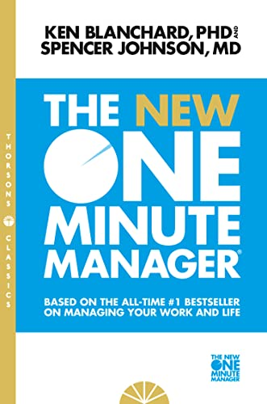

Library › Business & Startups
The New One Minute Manager — Summary & Key Lessons

The world's most-read management fable: three one-minute secrets that make people productive AND happy.
📖 OPEN THE FULL INTERACTIVE BREAKDOWN →🌐 Read it in Hindi, Hinglish, Gujarati, Tamil & 22 more languages — free, with audio.
💡 The Big Idea
Told as a fable of a young man searching for a great manager, the book distills leadership into three deceptively simple 'secrets': One Minute Goals (everyone knows exactly what good performance looks like, in 250 words or less), One Minute Praisings (catch people doing something right, immediately and specifically), and One Minute Re-Directs (correct mistakes promptly, criticize the behavior not the person, then reaffirm the person). The 2015 update makes it collaborative — goals set WITH people, not for them — because command-and-control is dead. People who feel good about themselves produce good results.
🧠 The 6 Key Lessons
Lesson 1: The False Choice: Results OR People
The Search
The young man's search reveals two broken manager species: 'autocratic' managers who get results while their people suffer (they win, the team loses), and 'democratic' managers whose people feel great while performance sags (the team wins, the organization loses). Both are half-managers. The One Minute Manager's heresy is refusing the trade-off: caring about people IS the results strategy, because motivated, clear, confident people outperform managed-by-fear people over any horizon longer than a quarter. Effectiveness isn't about how hard you manage — it's about how clearly and humanely.
📖 Example: The fable's opening tour: the young man interviews 'tough' managers boasting about results with burned-out teams, and 'nice' managers running happy, underperforming country clubs. Everyone he meets defends their half of the trade-off as inevitable. The One… Read the full example →
⚡ Do this: Diagnose yourself honestly: do you lean autocratic (results, tension) or accommodating (harmony, drift)? Write down which conversations you avoid — that's your half-manager blind spot.
Lesson 2: Secret 1: One Minute Goals
The First Secret
Most performance problems are actually clarity problems: people don't know exactly what's expected, so managers punish them for missing targets they couldn't see. One Minute Goals fix this: for each key responsibility (3–5 goals covering the critical 80%, not 50 covering everything), manager and employee agree on the goal together, write it in under 250 words, and each keeps a copy readable in a minute. The test of a good goal: the person can check their OWN performance against it without asking anyone. Clear is kind; vague is cruel.
📖 Example: The book's bowling metaphor: most organizations make people bowl through a curtain — they hear pins fall but never see the score, and then get a performance review saying they missed. One Minute Goals pull the curtain: everyone sees the pins, everyone can… Read the full example →
⚡ Do this: This week, sit with each direct report (or your own manager) and write 3–5 goals, each under 250 words, each with a visible 'score.' Both keep copies. Review takes one minute, weekly.
Lesson 3: Secret 2: One Minute Praisings
The Second Secret
The most powerful management act costs sixty seconds: when you see someone do something right, tell them immediately, tell them specifically what they did, tell them how it made you feel and why it matters, pause a beat so they FEEL it, then encourage more of the same. Most managers do the opposite — silence when things go well, feedback only when things break — which trains people that the only attention available is negative. Especially with new people and new tasks, praise progress: approximately right beats perfectly silent. You get more of what you reinforce.
📖 Example: The book's whale logic (expanded in Blanchard's 'Whale Done'): trainers get killer whales to leap over ropes by rewarding every tiny approximation — first swimming over a submerged rope, then higher, then higher. Nobody criticizes a whale into jumping.… Read the full example →
⚡ Do this: Run the 2-a-day drill: for two weeks, deliver two specific, immediate praisings daily ('When you did X, it meant Y — well done'). Watch what happens to output and to how often people bring you problems early.
Lesson 4: Secret 3: One Minute Re-Directs
The Third Secret
The 2015 edition's big change: reprimands became Re-Directs, because most mistakes are learning gaps, not character flaws. The sequence: address it as soon as you see it (never save up grievances for review season), confirm the facts and review the goal together, express how the mistake affects results — concretely, briefly — and pause. Then the half everyone skips: remind them they're better than this mistake, that you value them, and that it's over when it's over — no re-litigating, no cold shoulder. First half firm on the behavior; second half warm on the person. Both halves, or it doesn't work.
📖 Example: The manager in the fable explains why the pause-then-reaffirm matters: if criticism ends on the negative, people spend the afternoon defending themselves in their heads or updating their résumés — the lesson is lost to self-protection. Ending on genuine… Read the full example →
⚡ Do this: Next mistake you see: address it within 24 hours, in private, in under a minute — half on the behavior's impact, half reaffirming the person. Then genuinely drop it forever.
Lesson 5: Why One Minute Works: The Psychology
Why It Works
The secrets work because they align with how humans actually function: people need to know what's expected (goals kill anxiety and politics), feedback is the breakfast of champions (praisings make effort visible), and correction without humiliation preserves the self-respect that fuels performance (re-directs fix behavior without breaking people). The deeper principle: most managers manage the 20% of the time people fail; One Minute Managers invest in the 80% when people are doing fine or better. Behavior that gets noticed gets repeated. Behavior that gets ignored decays. You are always training your people — the only question is what.
📖 Example: The book's pigeon-and-slot-machine contrast: casinos keep humans pulling levers with intermittent, immediate rewards; most companies offer one delayed, diluted reward per year (the review) and wonder why engagement dies by February. The One Minute system is… Read the full example →
⚡ Do this: Audit your feedback ratio for one week: count corrections vs. praisings. If you're below 4:1 positive, you're training compliance, not excellence — rebalance deliberately.
Lesson 6: Share the Playbook — Then Get Out of the Way
The New Manager
The final secret is that there is no secret: the One Minute Manager openly teaches his system to everyone, because management done in the open builds trust instead of suspicion — people who know the rules can play the game. The 2015 edition's closing theme is autonomy: today's workers want partnership, not supervision; millennials and beyond simply leave managers who hoard control. Set goals together, reinforce generously, correct cleanly, share the method, and then step back — the point of the system is to need the manager less. The gift of the One Minute Manager is self-managing people.
📖 Example: The fable ends with the young man becoming a One Minute Manager himself — and immediately teaching the three secrets to his own team, gift-wrapped, no gatekeeping. The system's virality is the proof of its integrity: techniques that only work when hidden are… Read the full example →
⚡ Do this: Share the three secrets with your team explicitly this month — 'here's how I intend to manage you.' Invite them to call you out when you break the system. That conversation alone will change the room.
✅ 5-Step Action Plan
- Write 3–5 One Minute Goals with each person — under 250 words, self-scorable.
- Deliver two specific praisings a day for two weeks.
- Correct within 24 hours: firm on behavior, warm on person, then done.
- Track your praise-to-correction ratio; keep it at least 4:1.
- Teach the system openly to your team and invite accountability.
💬 Best Quotes from The New One Minute Manager
- “People who feel good about themselves produce good results.”
- “Help people reach their full potential — catch them doing something right.”
- “The best minute I spend is the one I invest in people.”
Interactive version: mark lessons as read, listen in your language, share quote cards.